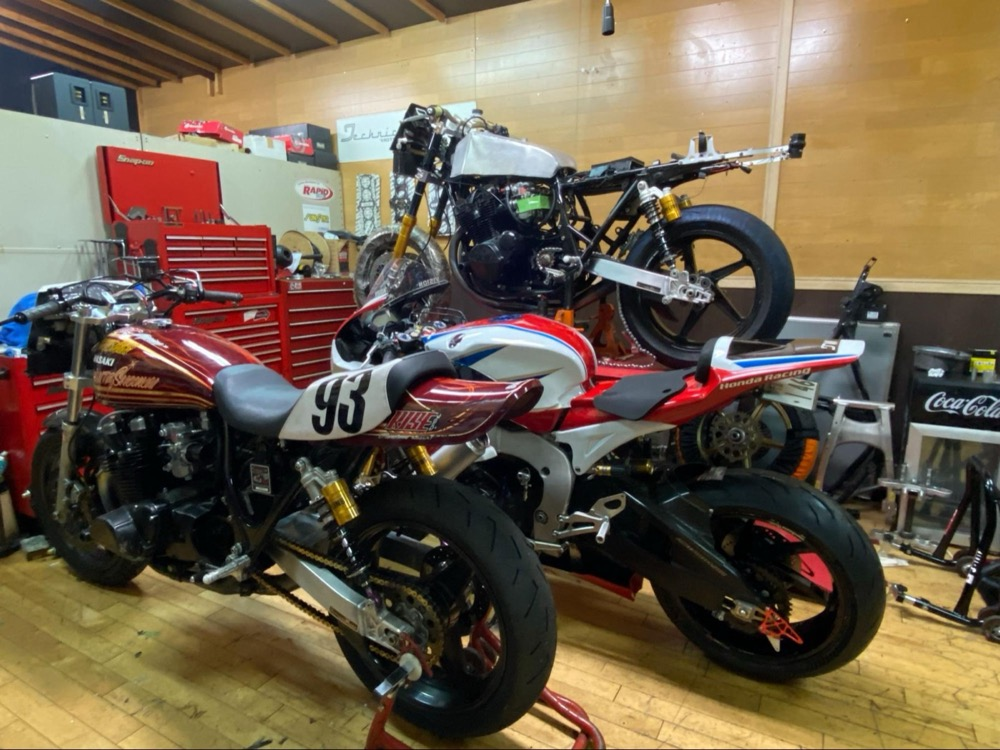
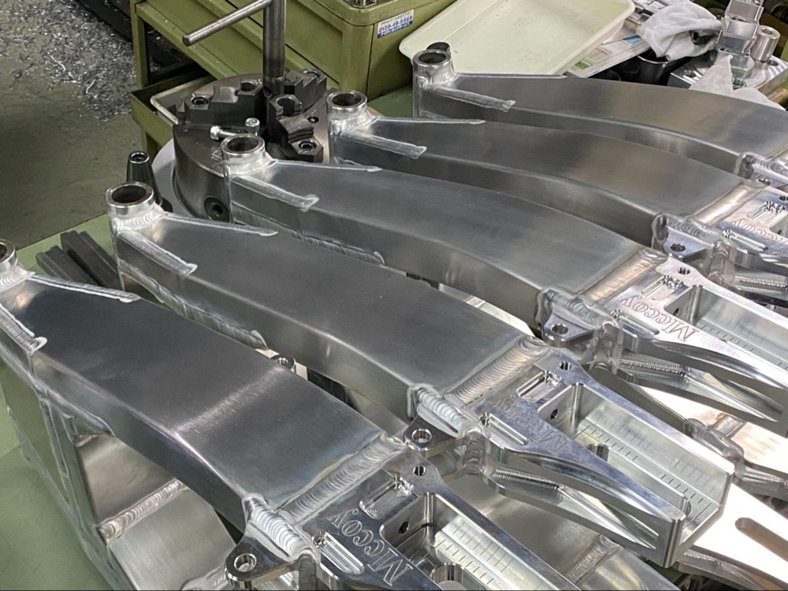
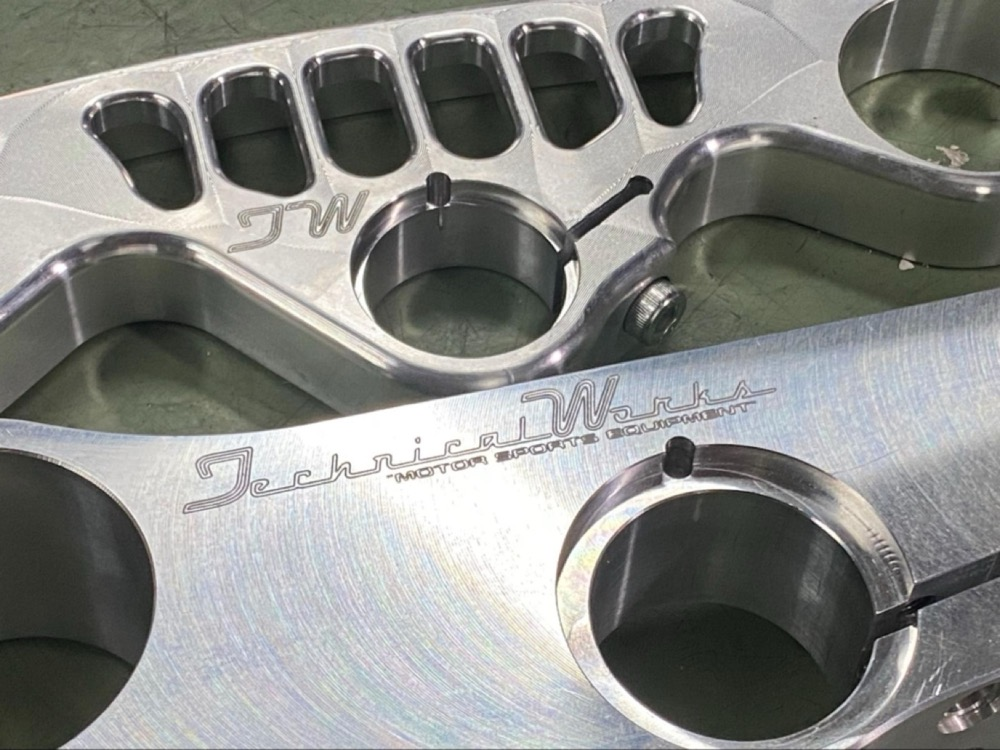
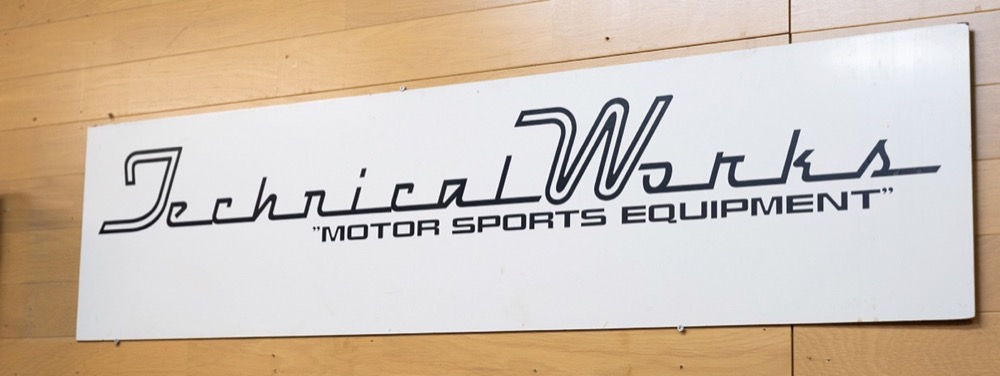

四街道市のカスタムパーツ専門メーカー
杉田 大
テクニカルワークス 代表
1980年、東京都出身。高校中退後、製造・溶接業の現場で経験を積みつつ、自らの興味でCAD/CAMや工作機械の技術を習得。20代半ばより車・バイク部品の製造を手がけ、20年以上にわたり、設計から製作まで一貫対応するエンジニアとして活躍している。
企業サイトを見るTRACK 01
四街道市のカスタムパーツ専門メーカー

千葉県北西部の住宅街を抜けると、鉄と油の匂いがわずかに漂う小さな工場に行き当たる。看板には「Technical Works」の文字。オートバイや四輪の金属部品を一気通貫で設計・製造している会社である。他社に真似できない高い技術と豊富な経験を基に、基本整備、修理から高度なチューニングまで対応が可能だ。
テクニカルワークス代表の杉田大（すぎたまさる）が工作機械の切削音を背に「やっぱインチキははしたくないし、ハッタリや嘘もつかないように心がけています」と言い切る様子は、職人というより修行僧の風格すら漂う。
TRACK 02
独学で積み重ねてきた技術と誇り

創業は2004年、と登記の上ではそう記されるが、実の年月はもっと深い。杉田は1980年生まれ。高校を約2週間で辞め、工場で働きながら溶接と切削を覚えた。20代半ばで旋盤を買い、30代でNC旋盤とマシニングセンターを導入。CADやCAMも独学で身につけ、気づけば二十余年、金属と向き合い続けてきた。「好きなバイクでサーキットを走っているうちに、手に入らないパーツは自分で作ればいいや、と思って始めたのがきっかけでしたね」
コツコツ積み重ねた研鑽は、いつしか誰にも真似できない類まれなる技術となって、削り出した部品や溶接などに伝わって成果として現れる。あなたのパーツを積んだマシンが各ショーで優勝した、対応していただいたおかげでタイムが良くなった…表彰台で輝くマシンを遠巻きに眺めながら、杉田さんはこぶしを握りしめる。OEM供給だから社名はほぼ出ない。それでも、自分が削り出したりした部品やバイクが風を切り、タイムを縮めたり、楽しんでもらえたら。そう思うだけで胸が熱くなる。以来、“表には出ない誇り”こそ会社の礎となった。


TRACK 03
「他社でできないモノこそ」
旋盤2台、フライス盤3台、マシニング2台、溶接機、治工具など。工房にはプロトタイプ開発を一人で完結できる機械が並ぶ。要望があればミルシートなどを付けたり、材料や処理、加工工程など聞かれれば丁寧に答えるようにしているという。「正直者がバカを見ない」ためだと杉田は語る。
「他社で出来ないと断られたんです、何とかなりませんか？という依頼が来ることがよくありますが、そういうときは特にやる気になりますね」と言うその言葉どおり、依頼主が北海道でも沖縄でも、部品が届けば即座に杉田は加工プランを提案して対応する。リピーター率が高いのは、そんな負けず嫌いの気質ゆえかもしれない。
もちろん、順風満帆とはいかないこともある。機械が壊れれば修理費は数十万はくだらない。狭いながらも何台もの機械があり、維持するだけでもかなりのランニングコストがかかる。落胆もつかの間、翌朝には復旧プランを練り、さらに高精度の治具を考えている自分に気づく。失敗しても「次はどう挽回するか」という材料になり、寸暇を惜しんで工具を研ぐ日々が続く。